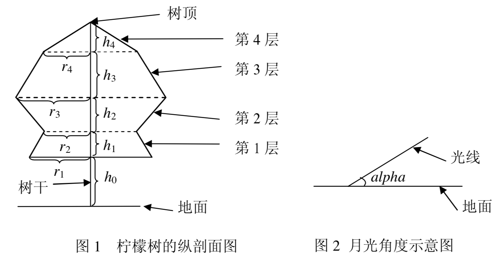

李哲非常非常喜欢柠檬树，特别是在静静的夜晚，当天空中有一弯明月温柔地照亮地面上的景物时，他必会悠闲地坐在他亲手植下的那棵柠檬树旁，独自思索着人生的哲理。
李哲是一个喜爱思考的孩子，当他看到在月光的照射下柠檬树投在地面上的影子是如此的清晰，马上想到了一个问题:树影的面积是多大呢？
李哲知道，直接测量面积是很难的，他想用几何的方法算，因为他对这棵柠檬树的形状了解得非常清楚，而且想好了简化的方法。
李哲将整棵柠檬树分成了$n$层，由下向上依次将层编号为$1,2,...,n$。从第$1$到$n-1$层，每层都是一个圆台型，第$n$层（最上面一层）是圆锥型。对于圆台型，其上下底面都是水平的圆。对于相邻的两个圆台，上层的下底面和下层的上底面重合。第$n$层（最上面一层）圆锥的底面就是第$n-1$层圆台的上底面。所有的底面的圆心（包括树顶）处在同一条与地面垂直的直线上。李哲知道每一层的高度为$h_1,h_2,...,h_n$，第$1$层圆台的下底面距地面的高度为$h_0$，以及每层的下底面的圆的半径$r_1,r_2,...,r_n$。李哲用熟知的方法测出了月亮的光线与地面的夹角为alpha。

为了便于计算，假设月亮的光线是平行光，且地面是水平的，在计算时忽略树干所产生的影子。李哲当然会算了，但是他希望你也来练练手。
文件的第1行包含一个整数$n$和一个实数alpha，表示柠檬树的层数和月亮的光线与地面夹角（单位为弧度）。
第2行包含$n+1$个实数$h_0,h_1,h_2,...,h_n$，表示树离地的高度和每层的高度。
第3行包含$n$个实数$r_1,r_2,...,r_n$，表示柠檬树每层下底面的圆的半径。
上述输入中的数据，同一行相邻的两个数之间用一个空格分隔。
输入的所有实数的小数点后可能包含1至10位有效数字。
输出1个实数，表示树影的面积。四舍五入保留两位小数。
2 0.7853981633 10.0 10.00 10.00 4.00 5.00
171.97
【数据范围】
$1≤n≤500，0.3<alpha<π/2，0<h_i≤100，0<r_i≤100$。
10%的数据中，$n=1$。30%的数据中，$n≤2$。60%的数据中，$n≤20$。100%的数据中，$n≤500$。
 Comet OJ
Comet OJ